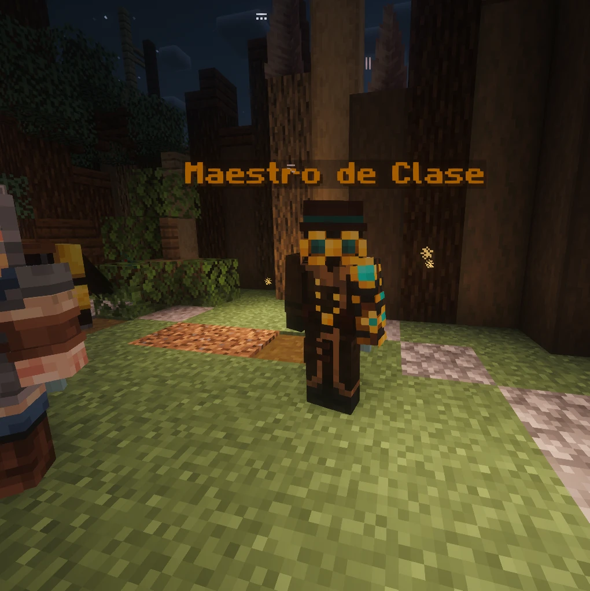

01
Busca al Maestro de Clase
Todo empieza aquí. El Maestro de Clase es un personaje con su nombre flotando sobre la cabeza: háblale con click derecho y se abre su menú.
Desde él eliges clase, aprendes habilidades, las subes de nivel, mejoras tu arma y, si eres Cazador, eliges mascota.
Ver las clases